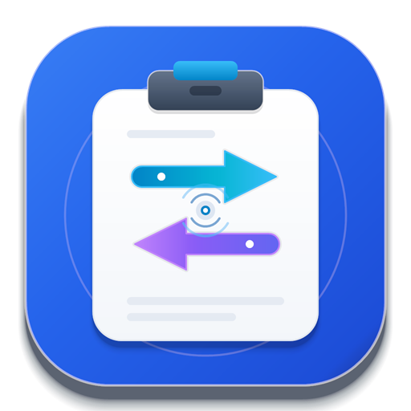

远程桌面FROM DESK TO EVERYWHERE
离开书桌，
不用离开你的工作。
从 Android 手机进入远程桌面。
查看文件、继续操作，让手上的事情顺畅接力。

ClipRelay下载应用跨过屏幕，继续刚才。
好的想法，
不该停在一块屏幕。
来自 · 我的电脑
选中文字或截图，发送到已配对设备。下一次粘贴，就在另一块屏幕。
试试上面的接力按钮01 / KEEP YOUR FLOW
从传递一段文字，到接手整台电脑。
把切换设备的间隙，留给更好的想法。
从 Android 手机进入远程桌面。
查看文件、继续操作，让手上的事情顺畅接力。
A THOUGHT, PASSED ON
文字和截图，送到另一台设备的剪贴板。
省下的步骤，留给眼前的事。
ONE MORE PAIR OF HANDS
通过 ProfilePilot CLI 连接设备，
让 AI 在你的授权下完成操作。
02 / CONNECTED. IN YOUR CONTROL.
局域网或外网，选择可用的连接通道。首次连接由你完成配对与授权；哪些设备可以访问，也始终由你决定。
了解连接与授权03 / MAKE THE FIRST CONNECTION
为电脑和手机选择对应版本，跟随各平台的安装说明，准备第一次连接。
添加目标设备，按应用引导核对设备信息，完成配对与访问授权。
选择发送目标，试着传一段文字。也可以从手机打开远程桌面，继续操作。
A FEW THINGS TO KNOW
局域网内可以发现并连接设备；外网也可按应用引导配置连接。实际使用直连还是中转，取决于网络环境与当前版本提供的通道。
可以。在应用中管理已授权设备，不再需要的访问可以撤销。首次连接按引导核对目标设备，再完成授权。
三个平台均提供安装入口。不同平台与版本的功能范围可能不同，请查看对应发布说明。macOS 提供 Apple Silicon 与 Intel 两种包，当前未公证；本次公开发布包的远控串流与真机安装验收尚未完成。
AI 操作属于 Windows 0.4.3 的开发预览，目前官网的 Windows 正式下载版尚未包含。目标设备的授权，以及浏览器或 Electron 的 ProfilePilot 连接，仍需按引导准备。请以正式发布说明为准。
Windows：先完整解压 ZIP，再在 PowerShell 中运行包内的 install.ps1。Android：打开 APK，按系统提示安装。Mac：按芯片选择 ZIP，解压后将 ClipRelay.app 拖入「应用程序」。完整步骤及平台限制请查看使用说明 ↗。下载失败时可使用平台卡片内的 GitHub 备用入口。
当前公开发布包尚未经过 Apple Developer ID 签名或公证。确认下载来源和校验值后，先尝试打开应用，再到「系统设置 → 隐私与安全性」选择「仍要打开」。公司管理的 Mac 可能不允许添加例外。查看 Apple 安装说明 ↗
YOUR NEXT SCREEN IS READY.
把 ClipRelay 带到你的设备上。
从一次连接开始，让工作自然继续。正式版信息核对于 2026年11月5日
从你的工作电脑开始。
把下一块屏幕，带在身边。
让 Mac 也加入这场接力。
AI 操作与新的服务设备发现入口属于 Windows 0.4.3 待发布功能，当前 Windows 正式下载版尚未包含。查看版本更新 ↗
macOS：公开发布包尚未经过 Apple 公证，远控串流与真机安装验收后置。首次打开请先核对下载来源与校验值，再按发布说明完成系统授权。